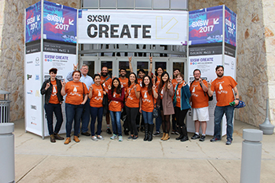

Making as a movement is almost entirely founded on the idea of connecting with others and the community. These projects that we create not only empower us as educators and learners, but also work directly with our environment to help others and make real changes. This is why forming tight-knit communities can only benefit individual makers who are looking for ideas to flesh out, problems to solve, and other makers to help. In many cities, this can be seen through the establishment of several makerspaces, where makers can come together to learn new skills and work on their projects in the company of like-minded individuals. I have never felt more welcomed into a community than this one! Makers a friendly and always willing to answer questions and talk about the projects, making it very easy to feel at home and comfortable, which is very important for students (and teachers!) who are trying something new for the first time.
Apart from joining with other individuals, making connects with the community in another very profound way. Making reacts to needs of the community and helps students learn to solve concrete problems that affect them in their day-to-day lives. My Maker philosophy is very closely tied to my overall teaching philosophy; as a teacher, I hope to allow my students to learn in a way that empowers them to find agency in their education, along with using this agency in a social justice perspective. The writings of Paulo Freire in his book Pedagogy of the Oppressed describe how education can be tailored to specific communities, and it can be as simple as wording a math problem to deal with a local problem, or as complicated as designing a full-scale project that centers around the community and the inequalities that can arise in these communities. Making can be directly related to solving these problems, such as designing a water-cleaning solution for local water supplies as one example, and I hope to use maker education as a way to help students use their education in a powerful way.
From the very start of my involvement in the Maker community, I've been in contact with makers in Austin, as well as the amazing online community that helps me create things like this website, my Arduino projects, and much more! Perhaps my biggest involvement in the community has to be my UTeach Maker Cohort, shown to the right at my first formal maker event, SXSW Create! My cohort has been responsible for planning many maker events where I have been exposed to new ideas and the amazing creativity of the Maker movement.
SXSW Create has some amazing things to show off, much like Austin's Maker Faire in May of 2017. This was another event I attending as part of my Uteach Maker cohort and I had the great opportunity of working with kids using circuit blocks also made by our cohort. These circuit blocks worked somewhat like Snap circuits in that they had individual pieces that were linked together with wires that would cause them to function, such as hooking up a buzzer to a battery and having it go off once the circuit was completed. This experience with making as a community really showed the learning aspect of working with others. Kids interested in making stopped by our booth and played with circuits while learning something interesting. It showed this community does more than work to create something together, but it also allows a network of learning to be created when a novice works with a more experienced maker.